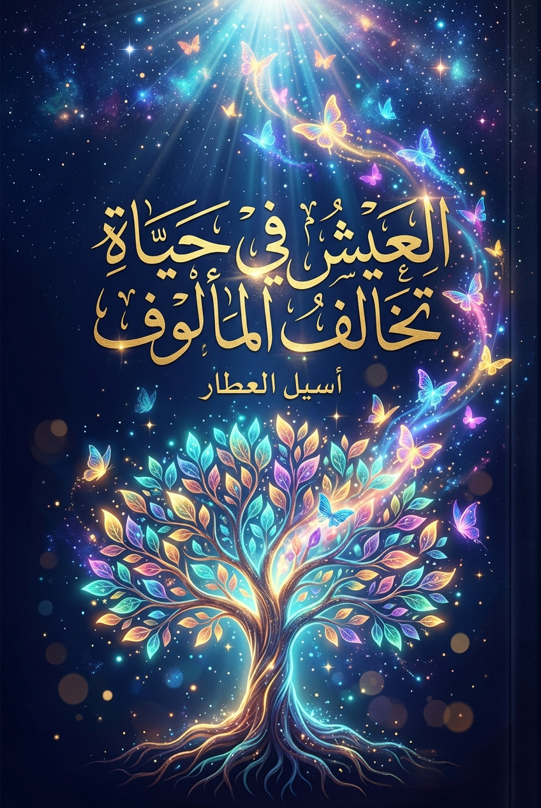

📖
العيش في حياة تخالف المألوف
موسيقى هادئة
🔊
التالي
⭠
☰
🎵
⚙
🔖
⭢
السابق
✕

بيانو هادئ للاسترخاء والقراءة
Peder B. Helland • Vol. 3
▶
🔈
🔊
فهرس المحتويات والبحث
✕
تخصيص وتفضيلات القراءة
✕
مظهر وألوان الكتاب
ليلي ملكي
ورق عاجي
بردي دافئ
حجم خط النصوص
صغير
متوسط
كبير
موسع
⛶ وضع ملء الشاشة للقراءة الممتعة
🎵 موسيقى بيانو هادئة لمرافقتك في رحلة القراءة
نعم، أنا مستعد ✦ لندخل عالم الكتاب
تخطي المقدمة والبدء فوراً